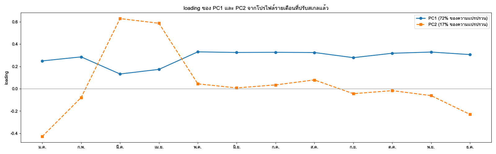

15 การสำรวจข้อมูลหลายมิติ
บทที่ 13 และ 14 วิเคราะห์ทีละตัวแปรหรือทีละสถานี แต่คำถามหลายข้อของโครงการต้องมองหลายมิติพร้อมกัน สถานีใดมีรูปแบบตามฤดูกาลคล้ายกัน ทั้งที่อยู่คนละภาค สถานีทั้งหมดแบ่งเป็นกี่แบบ และวันใดผิดปกติเมื่อพิจารณาหลายตัวแปรร่วมกัน คำถามเหล่านี้ตอบไม่ได้ด้วยกราฟสองแกนธรรมดา เพราะโปรไฟล์รายเดือนของสถานีหนึ่งมีถึง 12 มิติ
บทนี้ให้เครื่องมือสามกลุ่ม กลุ่มแรกคือการลดมิติ ซึ่งบีบข้อมูลหลายมิติให้เหลือไม่กี่มิติที่เก็บข้อมูลส่วนใหญ่ไว้ โดยเฉพาะ PCA ซึ่งเข้าใจได้ลึกถึงระดับคณิตศาสตร์ กลุ่มที่สองคือการจัดกลุ่ม ซึ่งหาว่าหน่วยข้อมูลแบ่งเป็นกลุ่มตามธรรมชาติอย่างไร กลุ่มที่สามคือการตรวจหาค่าผิดปกติ ผลงานของบทคือตาราง station_clusters และ daily_outlier_flags ซึ่งใช้ต่อในแผนที่ของบทที่ 17 และแดชบอร์ดของบทที่ 20 ข้อควรรู้ตั้งแต่ต้นคือ วิธีทั้งหมดในบทนี้เป็นการสำรวจ ผลลัพธ์ขึ้นกับการตัดสินใจของผู้วิเคราะห์หลายจุด และต้องตรวจความทนทานเสมอ
วัตถุประสงค์การเรียนรู้
เมื่อจบบทนี้ ผู้อ่านสามารถ
- เลือกวิธีวัดระยะทางหรือความคล้าย และอธิบายผลของการปรับสเกลต่อการวิเคราะห์หลายมิติ
- อธิบายคณิตศาสตร์ของ PCA ผ่าน eigen decomposition และ SVD
- ตีความ loading, score และ explained variance ของ PCA ในบริบทของข้อมูล PM2.5
- จัดกลุ่มสถานีด้วย k-means และ hierarchical clustering
- ประเมินผลการจัดกลุ่มด้วย silhouette และการทดสอบความเสถียร
- ตรวจหาค่าผิดปกติด้วยวิธีที่เหมาะกับบริบท และแยกความผิดพลาดออกจากเหตุการณ์จริงอย่างมีเหตุผล
15.1 ระยะทาง ความคล้าย และการปรับสเกล
เมทริกซ์ข้อมูลหลายมิติ
การวิเคราะห์หลายมิติเริ่มจากการกำหนดว่า อะไรคือหน่วย และ อะไรคือมิติ ในบทนี้ หน่วยคือสถานี และมิติคือค่าเฉลี่ย PM2.5 ของแต่ละเดือนในช่วงสำรวจ ได้เมทริกซ์ที่มีหนึ่งแถวต่อสถานีและ 12 คอลัมน์ เรียกว่า โปรไฟล์รายเดือน (monthly profile)
import duckdb
import numpy as np
import pandas as pd
con = duckdb.connect("data/pm25.duckdb", read_only=True)
monthly = con.execute("""
SELECT d.station_id, s.region, MONTH(d.date) AS month, AVG(d.pm25_mean) AS pm25
FROM daily_pm25_clean AS d JOIN stations AS s USING (station_id)
WHERE d.is_complete AND d.date < DATE '2024-01-01'
GROUP BY d.station_id, s.region, MONTH(d.date)
""").df()
profile = monthly.pivot(index="station_id", columns="month", values="pm25")
profile.columns = [f"m{m:02d}" for m in profile.columns] # ชื่อคอลัมน์เป็นสตริง
region = monthly.drop_duplicates("station_id").set_index("station_id")["region"].loc[profile.index]
print(profile.shape, int(profile.isna().sum().sum()))# ผลลัพธ์ (ตัวอย่าง)
# ข้อมูลสังเคราะห์ 50 สถานี ไม่ใช่ข้อมูล Air4Thai จริง
(50, 12) 0ถ้าสถานีใดไม่มีข้อมูลของบางเดือน เช่น เครื่องเสียทั้งเดือน เมทริกซ์จะมีค่าว่าง วิธีส่วนใหญ่ในบทนี้ไม่รับค่าว่าง ต้องตัดสินใจว่าจะตัดสถานีที่ขาดหลายเดือนออก หรือเติมค่า (บทที่ 10) และบันทึกเหตุผลไว้ ข้อมูลสังเคราะห์ของหนังสือไม่มีค่าว่างในระดับนี้
ระยะทางแบบยุคลิดและแบบอื่น
วิธีหลายมิติเกือบทุกวิธีอาศัยแนวคิดว่าหน่วยสองหน่วย “ใกล้” หรือ “คล้าย” กันเพียงใด ระยะทางที่ใช้บ่อยที่สุดคือ ระยะทางแบบยุคลิด (Euclidean distance)
\[ d(\mathbf{x}, \mathbf{y}) = \sqrt{\sum_{j=1}^{p} (x_j - y_j)^2} \tag{15.1}\]
โดยที่ \(\mathbf{x}\) และ \(\mathbf{y}\) คือเวกเตอร์ของหน่วยสองหน่วย (เช่น โปรไฟล์ของสองสถานี) และ \(p\) คือจำนวนมิติ ตัวอย่างในสองมิติ ถ้าสถานี ก มีค่าเฉลี่ยมีนาคมและกรกฎาคมเป็น 55 และ 21 µg/m³ ส่วนสถานี ข เป็น 45 และ 15 µg/m³ ระยะทางคือ \(\sqrt{(55-45)^2 + (21-15)^2} = \sqrt{136} \approx 11.7\) µg/m³
| วิธีวัด | วัดอะไร | เหมาะเมื่อ |
|---|---|---|
| ยุคลิด | ความต่างของค่าโดยรวม | ต้องการให้ระดับและรูปร่างมีผลทั้งคู่ |
| แมนฮัตตัน (\(\sum \lvert x_j - y_j \rvert\)) | ผลรวมความต่างสัมบูรณ์ | ต้องการลดผลของมิติที่ต่างมากเพียงมิติเดียว |
| สหสัมพันธ์ (\(1 - r\)) | ความต่างของ รูปร่าง โดยไม่สนระดับ | สนใจจังหวะของฤดูกาล ไม่สนว่าสูงหรือต่ำ |
| Mahalanobis | ระยะที่คำนึงถึงความแปรปรวนร่วมของมิติ | มิติสัมพันธ์กันสูง (หัวข้อ 15.7) |
การเลือกวิธีวัดคือการตัดสินใจว่า “คล้าย” หมายถึงอะไร สถานีในภาคใต้กับสถานีในภาคเหนืออาจมีระดับต่างกันมาก (ระยะยุคลิดไกล) และจังหวะของฤดูกาลก็ต่างกัน (สหสัมพันธ์ต่ำหรือติดลบ) ในข้อมูลสังเคราะห์ของหนังสือ สหสัมพันธ์ระหว่างโปรไฟล์ของสถานีเชียงใหม่ (s01) กับสงขลา (s45) เท่ากับ −0.10 แปลว่าเดือนที่เชียงใหม่สูง สงขลาไม่ได้สูงตาม ส่วนสถานีเชียงใหม่สองแห่ง (s01, s02) มีรูปร่างแทบเหมือนกัน
ทำไมต้องปรับสเกล
ระยะทางแบบยุคลิดให้น้ำหนักกับมิติที่มีความแปรปรวนสูงมากกว่า ถ้ามิติมีหน่วยต่างกัน เช่น PM2.5 (µg/m³) กับ CO (ppm) มิติที่มีตัวเลขใหญ่จะครอบงำระยะทางทั้งหมด แม้ในโปรไฟล์รายเดือนซึ่งทุกมิติมีหน่วยเดียวกัน เดือนในฤดูฝุ่นก็มีความแปรปรวนระหว่างสถานีสูงกว่าเดือนในฤดูฝนมาก ระยะทางจึงถูกกำหนดโดยเดือนกุมภาพันธ์ถึงเมษายนเป็นหลัก
การทำให้เป็นมาตรฐาน (standardization) แปลงแต่ละมิติให้มีค่าเฉลี่ย 0 และส่วนเบี่ยงเบนมาตรฐาน 1 ด้วย \(z_{ij} = (x_{ij} - \bar{x}_j)/s_j\) ทุกมิติจึงมีน้ำหนักเท่ากัน
from sklearn.preprocessing import StandardScaler
X = StandardScaler().fit_transform(profile) # คืนค่าเป็น NumPy arrayการปรับสเกลไม่ใช่สิ่งที่ถูกเสมอ ถ้าความต่างของเดือนในฤดูฝุ่น คือ สิ่งที่สนใจ การปรับสเกลก็ลดความสำคัญของสิ่งนั้นลง หัวข้อ 15.3 แสดงว่าผลของ PCA เปลี่ยนไปอย่างไรเมื่อปรับและไม่ปรับสเกล ทางเลือกอื่นได้แก่ การแปลง log ก่อน (ลดผลของระดับ เน้นสัดส่วน) และ robust scaling ด้วยมัธยฐานและ IQR (RobustScaler) เมื่อมีค่าผิดปกติ
คำสาปของมิติ
เมื่อจำนวนมิติเพิ่มขึ้น ระยะทางระหว่างจุดคู่ต่าง ๆ จะใกล้เคียงกันมากขึ้นเรื่อย ๆ จุดที่ใกล้ที่สุดกับไกลที่สุดแทบไม่ต่างกัน ปรากฏการณ์นี้เรียกว่า คำสาปของมิติ (curse of dimensionality) และทำให้วิธีที่อาศัยระยะทาง เช่น การจัดกลุ่มและการหาเพื่อนบ้านใกล้สุด ทำงานได้แย่ลงในข้อมูลมิติสูง (Beyer และคณะ 1999) โปรไฟล์ 12 มิติยังไม่ถือว่าสูงมาก แต่ถ้าใช้ค่ารายวัน 365 มิติต่อสถานี ปัญหานี้จะชัดเจน การลดมิติด้วย PCA ก่อนจัดกลุ่มเป็นวิธีบรรเทาที่ใช้บ่อย
15.2 PCA เชิงคณิตศาสตร์: eigen decomposition และ SVD
เป้าหมายของ PCA
PCA (principal component analysis, การวิเคราะห์องค์ประกอบหลัก) หาทิศทางใหม่ในปริภูมิข้อมูลที่ข้อมูลกระจายมากที่สุด ทิศทางแรก (PC1) คือทิศที่ความแปรปรวนของข้อมูลเมื่อฉายลงไปสูงที่สุด ทิศทางที่สอง (PC2) คือทิศที่ความแปรปรวนสูงที่สุดในบรรดาทิศที่ตั้งฉากกับ PC1 และเป็นเช่นนี้ต่อไป (Jolliffe และ Cadima 2016) ถ้าข้อมูลส่วนใหญ่กระจายอยู่ในไม่กี่ทิศ การเก็บเฉพาะองค์ประกอบแรก ๆ จะลดมิติได้มากโดยเสียข้อมูลน้อย
ผ่าน eigen decomposition
ให้ \(\mathbf{X}\) เป็นเมทริกซ์ข้อมูลขนาด \(n \times p\) ที่ลบค่าเฉลี่ยของแต่ละคอลัมน์ออกแล้ว (centered) เมทริกซ์ความแปรปรวนร่วม (covariance matrix) คือ
\[ \mathbf{C} = \frac{1}{n - 1}\mathbf{X}^\top \mathbf{X} \tag{15.2}\]
ความแปรปรวนของข้อมูลเมื่อฉายลงบนเวกเตอร์หนึ่งหน่วย \(\mathbf{w}\) คือ \(\mathbf{w}^\top \mathbf{C} \mathbf{w}\) การหา \(\mathbf{w}\) ที่ทำให้ค่านี้สูงสุดภายใต้เงื่อนไข \(\lVert \mathbf{w} \rVert = 1\) ด้วยตัวคูณลากรองจ์ นำไปสู่สมการ
\[ \mathbf{C}\mathbf{w} = \lambda \mathbf{w} \tag{15.3}\]
ซึ่งคือสมการค่าเจาะจง (eigenvalue equation) ทิศทางขององค์ประกอบหลักคือ eigenvector \(\mathbf{w}_k\) ของ \(\mathbf{C}\) และความแปรปรวนตามทิศนั้นคือ eigenvalue \(\lambda_k\) เรียงจากมากไปน้อย \(\lambda_1 \ge \lambda_2 \ge \dots \ge \lambda_p \ge 0\) เพราะ \(\mathbf{C}\) เป็นเมทริกซ์สมมาตรที่กึ่งบวกแน่นอน eigenvector ทั้งหมดจึงตั้งฉากกัน และ eigenvalue ไม่ติดลบ
ผ่าน SVD
ในทางปฏิบัติ ไลบรารีอย่าง scikit-learn ไม่ได้คำนวณ \(\mathbf{C}\) ตรง ๆ แต่ใช้ SVD (singular value decomposition) ของ \(\mathbf{X}\) ซึ่งเสถียรทางตัวเลขกว่า
\[ \mathbf{X} = \mathbf{U}\boldsymbol{\Sigma}\mathbf{V}^\top \tag{15.4}\]
โดยที่ \(\mathbf{U}\) (\(n \times p\)) และ \(\mathbf{V}\) (\(p \times p\)) มีคอลัมน์ตั้งฉากกันหนึ่งหน่วย และ \(\boldsymbol{\Sigma}\) เป็นเมทริกซ์ทแยงของ singular value \(\sigma_1 \ge \sigma_2 \ge \dots \ge 0\) เมื่อแทนลงใน สมการ 15.2 จะได้ \(\mathbf{C} = \mathbf{V}\frac{\boldsymbol{\Sigma}^2}{n-1}\mathbf{V}^\top\) แปลว่า คอลัมน์ของ \(\mathbf{V}\) คือ eigenvector ของ \(\mathbf{C}\) และ \(\lambda_k = \sigma_k^2/(n - 1)\) ส่วน score ของแต่ละหน่วย (พิกัดในระบบแกนใหม่) คือ \(\mathbf{X}\mathbf{V} = \mathbf{U}\boldsymbol{\Sigma}\) (Hastie และคณะ 2009)
from sklearn.decomposition import PCA
pca = PCA().fit(X)
Xc = X - X.mean(axis=0)
U, S, Vt = np.linalg.svd(Xc, full_matrices=False)
eigvals = np.linalg.eigvalsh(np.cov(Xc.T))[::-1] # eigenvalue เรียงจากมากไปน้อย
print(pca.explained_variance_[:2].round(2), (S[:2] ** 2 / (len(X) - 1)).round(2), eigvals[:2].round(2))# ผลลัพธ์ (ตัวอย่าง)
# ข้อมูลสังเคราะห์ 50 สถานี ไม่ใช่ข้อมูล Air4Thai จริง
[8.8 2.04] [8.8 2.04] [8.8 2.04]ทั้งสามวิธีให้ความแปรปรวนขององค์ประกอบแรกเท่ากัน คือ 8.8 และ 2.04 ยืนยันความสัมพันธ์ระหว่าง eigen decomposition กับ SVD
explained variance
สัดส่วนความแปรปรวนที่องค์ประกอบที่ \(k\) อธิบายได้ คือ
\[ \text{explained variance ratio}_k = \frac{\lambda_k}{\sum_{j=1}^{p} \lambda_j} \tag{15.5}\]
เมื่อข้อมูลผ่านการทำให้เป็นมาตรฐานแล้ว ผลรวมของ eigenvalue ทั้งหมดเท่ากับจำนวนมิติ \(p\) (ที่นี่คือ 12 โดยประมาณ) ในตัวอย่าง PC1 อธิบายได้ \(8.8/12.24 \approx 0.72\) หรือ 72% ของความแปรปรวนทั้งหมด (ตัวหารคือผลรวม eigenvalue ทั้ง 12 ค่า ซึ่งเท่ากับ \(12 \times 50/49\) เพราะ StandardScaler หารด้วย \(n\) แต่ความแปรปรวนร่วมหารด้วย \(n - 1\))
15.3 การตีความ loading และ explained variance
explained variance บอกอะไร
print(pca.explained_variance_ratio_[:4].round(3), pca.explained_variance_ratio_.cumsum()[:3].round(3))# ผลลัพธ์ (ตัวอย่าง)
# ข้อมูลสังเคราะห์ 50 สถานี ไม่ใช่ข้อมูล Air4Thai จริง
[0.719 0.167 0.043 0.02 ] [0.719 0.886 0.929]สององค์ประกอบแรกอธิบายความแปรปรวนได้ 88.6% แปลว่าโปรไฟล์ 12 มิติของสถานีเกือบทั้งหมดสรุปได้ด้วยตัวเลขเพียงสองตัว วิธีเลือกจำนวนองค์ประกอบที่ใช้บ่อยได้แก่ เลือกให้สัดส่วนสะสมถึงเกณฑ์ เช่น 80–90% หรือดู scree plot (กราฟ eigenvalue เรียงลำดับ) แล้วเลือกจุดที่กราฟหักลงเป็นแนวราบ ในตัวอย่างนี้ eigenvalue ลดลงเร็วมากหลังองค์ประกอบที่สอง การเลือกสององค์ประกอบจึงสมเหตุสมผล
loading บอกว่าองค์ประกอบหมายถึงอะไร
loading คือสัมประสิทธิ์ของแต่ละมิติเดิมในองค์ประกอบหลัก (สมาชิกของ eigenvector) loading ที่มีค่าสัมบูรณ์สูงแปลว่ามิตินั้นมีส่วนสำคัญต่อองค์ประกอบนั้น การตีความ loading เปลี่ยนตัวเลขนามธรรมให้มีความหมายในโดเมน
loadings = pd.DataFrame(pca.components_[:2].T, index=profile.columns, columns=["PC1", "PC2"])
print(loadings.round(2).T)# ผลลัพธ์ (ตัวอย่าง)
# ข้อมูลสังเคราะห์ 50 สถานี ไม่ใช่ข้อมูล Air4Thai จริง
m01 m02 m03 m04 m05 m06 m07 m08 m09 m10 m11 m12
PC1 0.24 0.29 0.17 0.19 0.32 0.33 0.32 0.32 0.29 0.33 0.33 0.28
PC2 -0.45 -0.11 0.59 0.57 0.08 0.01 0.08 0.03 -0.06 -0.05 -0.04 -0.30
การตีความ
- PC1 มี loading เป็นบวกทุกเดือนในขนาดใกล้เคียงกัน สถานีที่มี score ของ PC1 สูงคือสถานีที่ค่าสูงทุกเดือน PC1 จึงแทน ระดับมลพิษโดยรวม สถานีภาคใต้มี score ของ PC1 เฉลี่ย −5.91 ต่ำกว่าภาคอื่นมาก
- PC2 มี loading บวกในเดือนมีนาคมถึงเมษายน และลบในเดือนธันวาคมถึงมกราคม สถานีที่มี score ของ PC2 สูงคือสถานีที่ยอดฤดูฝุ่นมาช้า (มีนาคมถึงเมษายน) ส่วนสถานีที่ score ต่ำคือสถานีที่ยอดมาเร็ว (ธันวาคมถึงมกราคม) PC2 จึงแทน จังหวะของฤดูฝุ่น สถานีภาคเหนือมี score เฉลี่ย 2.00 ส่วนภาคกลางมี −1.11
ข้อควรรู้สามข้อ ข้อแรก เครื่องหมายของ loading ไม่มีความหมายในตัว การกลับเครื่องหมายของทั้งองค์ประกอบ (และของ score) ให้ผลเชิงคณิตศาสตร์เหมือนเดิม ไลบรารีต่างรุ่นอาจให้เครื่องหมายต่างกัน การตีความต้องดูที่ รูปแบบ ของ loading ข้อสอง องค์ประกอบหลักไม่จำเป็นต้องมีความหมายที่ตีความได้เสมอ บางครั้งเป็นเพียงทิศทางทางคณิตศาสตร์ การตั้งชื่อองค์ประกอบต้องมีหลักฐานจาก loading และ score ไม่ใช่จากความคาดหวัง ข้อสาม ถ้ามีข้อมูลหลายปี ควรตรวจว่า loading เสถียรเมื่อคำนวณแยกแต่ละปีหรือไม่
ผลของการปรับสเกล
เมื่อทำ PCA โดยไม่ปรับสเกล (PCA().fit(profile)) สัดส่วนความแปรปรวนของสององค์ประกอบแรกเปลี่ยนเป็น 0.606 และ 0.328 และ loading ของ PC1 ถูกครอบงำด้วยเดือนกุมภาพันธ์ถึงเมษายน เพราะเดือนเหล่านี้มีความแปรปรวนระหว่างสถานีสูงที่สุด PCA แบบไม่ปรับสเกลจึงตอบคำถาม “สถานีต่างกันมากที่สุดในเดือนใด” ส่วนแบบปรับสเกลตอบคำถาม “รูปแบบใดที่ทำให้สถานีต่างกัน เมื่อทุกเดือนสำคัญเท่ากัน” ไม่มีแบบใดถูกเสมอ แต่ต้องรู้ว่าเลือกแบบใดและเพราะอะไร
score และ biplot
score ของสององค์ประกอบแรกวาดเป็น scatter plot ได้ แต่ละจุดคือหนึ่งสถานี ระบายสีตามภาคเพื่อดูว่าภาคแยกกันในปริภูมิขององค์ประกอบหรือไม่
import plotly.express as px
scores = pd.DataFrame(pca.transform(X)[:, :2], index=profile.index, columns=["PC1", "PC2"])
fig = px.scatter(scores.join(region), x="PC1", y="PC2", color="region",
hover_name=scores.index, labels={"region": "ภาค"})biplot คือ scatter plot ของ score ที่ซ้อนลูกศรของ loading ไว้ด้วย ช่วยให้เห็นว่าสถานีที่อยู่ทิศใดของกราฟมีค่าสูงในเดือนใด
15.4 t-SNE และ UMAP: แนวคิดและกับดักการตีความ ★
หัวข้อนี้ไม่ได้สอนในชั้นเรียน อ่านข้ามได้โดยไม่กระทบความเข้าใจบทถัดไป
การลดมิติแบบไม่เชิงเส้น
PCA เป็นการลดมิติแบบเชิงเส้น คือฉายข้อมูลลงบนระนาบ ถ้าโครงสร้างของข้อมูลโค้งงอ เช่น กลุ่มที่เรียงตัวเป็นวง PCA จะเห็นได้ไม่ดี t-SNE (t-distributed stochastic neighbor embedding) และ UMAP (uniform manifold approximation and projection) เป็นวิธีแบบไม่เชิงเส้นที่พยายามรักษา เพื่อนบ้านใกล้เคียง ไว้ จุดที่ใกล้กันในปริภูมิเดิมควรใกล้กันในภาพสองมิติ (Maaten และ Hinton 2008; McInnes และคณะ 2018)
from sklearn.manifold import TSNE
import umap
emb_tsne = TSNE(n_components=2, perplexity=10, init="pca", random_state=0).fit_transform(X)
emb_umap = umap.UMAP(n_neighbors=10, min_dist=0.1, random_state=42).fit_transform(X)กับดักการตีความ
ภาพจาก t-SNE และ UMAP สวยและมักแยกกลุ่มชัดเจน ซึ่งทำให้ถูกตีความเกินกว่าที่วิธีรองรับ Wattenberg และคณะแสดงกับดักเหล่านี้ด้วยตัวอย่างเชิงโต้ตอบ (Wattenberg และคณะ 2016)
| สิ่งที่ดูเหมือนบอก | ความจริง |
|---|---|
| ขนาดของกลุ่มในภาพ | ไม่มีความหมาย t-SNE ขยายกลุ่มที่หนาแน่นและหดกลุ่มที่กระจาย |
| ระยะห่างระหว่างกลุ่ม | ไม่น่าเชื่อถือ กลุ่มที่อยู่ไกลกันในภาพอาจไม่ได้ต่างกันมากกว่ากลุ่มที่อยู่ใกล้ |
| การมีกลุ่มแยกกัน | อาจเกิดจากพารามิเตอร์ ข้อมูลสุ่มก็ให้ภาพที่ดูเป็นกลุ่มได้เมื่อ perplexity ต่ำ |
| แกน x และ y | ไม่มีความหมาย ต่างจาก PC1 และ PC2 ที่มี loading ให้ตีความ |

ภาพที่ 15.2 แสดงว่าข้อมูลชุดเดียวกันให้ภาพที่ต่างกันมากตามค่า perplexity ที่ perplexity ต่ำ สถานีภาคเหนือแตกเป็นสามก้อน ซึ่งอาจทำให้เข้าใจผิดว่ามีกลุ่มย่อยจริง หลักปฏิบัติคือ ลองพารามิเตอร์หลายค่า ใช้ t-SNE และ UMAP เพื่อ สร้างสมมติฐาน เกี่ยวกับโครงสร้าง แล้วตรวจสอบด้วยวิธีอื่น และไม่ใช้ระยะทางหรือขนาดในภาพเป็นหลักฐาน สำหรับข้อมูลที่มีเพียงหลายสิบหน่วยอย่างสถานีในโครงการนี้ PCA มักให้ภาพที่ตีความได้และน่าเชื่อถือกว่า
15.5 clustering: k-means, hierarchical, ★ DBSCAN
การจัดกลุ่มคืออะไร
การจัดกลุ่ม (clustering) แบ่งหน่วยข้อมูลเป็นกลุ่มโดยให้หน่วยในกลุ่มเดียวกันคล้ายกัน และหน่วยต่างกลุ่มต่างกัน โดยไม่มีป้ายคำตอบให้เรียนรู้ (unsupervised) ในโครงการนี้ การจัดกลุ่มสถานีตามโปรไฟล์รายเดือนตอบคำถามว่า “สถานีในประเทศไทยมีรูปแบบมลพิษตามฤดูกาลกี่แบบ และแต่ละแบบเป็นอย่างไร” ซึ่งอาจไม่ตรงกับการแบ่งภาคทางการปกครอง
k-means
k-means แบ่งข้อมูลเป็น \(k\) กลุ่มที่กำหนดไว้ล่วงหน้า โดยหาจุดศูนย์กลาง (centroid) ของแต่ละกลุ่มให้ผลรวมกำลังสองของระยะทางจากแต่ละจุดถึงศูนย์กลางของกลุ่มตนต่ำที่สุด
\[ \min_{C_1,\dots,C_k} \sum_{c=1}^{k} \sum_{\mathbf{x}_i \in C_c} \lVert \mathbf{x}_i - \boldsymbol{\mu}_c \rVert^2 \tag{15.6}\]
โดยที่ \(C_c\) คือเซตของหน่วยในกลุ่ม \(c\) และ \(\boldsymbol{\mu}_c\) คือค่าเฉลี่ยของหน่วยในกลุ่มนั้น ค่ารวมนี้เรียกว่า inertia อัลกอริทึมของ Lloyd สลับระหว่างสองขั้น คือ กำหนดแต่ละจุดให้กลุ่มที่ศูนย์กลางใกล้ที่สุด แล้วคำนวณศูนย์กลางใหม่ ทำซ้ำจนไม่เปลี่ยน (Lloyd 1982) ผลลัพธ์ขึ้นกับจุดเริ่มต้น จึงต้องเริ่มหลายครั้ง (n_init) แล้วเลือกผลที่ inertia ต่ำที่สุด
from sklearn.cluster import KMeans
K = 4
km = KMeans(n_clusters=K, n_init=10, random_state=42).fit(X)
print(pd.crosstab(region, km.labels_))# ผลลัพธ์ (ตัวอย่าง)
# ข้อมูลสังเคราะห์ 50 สถานี ไม่ใช่ข้อมูล Air4Thai จริง
col_0 0 1 2 3
region
กลาง 14 1 0 7
ตะวันออกเฉียงเหนือ 5 0 0 2
เหนือ 0 0 14 1
ใต้ 0 6 0 0ตารางไขว้แสดงว่ากลุ่มไม่ตรงกับภาคทั้งหมด กลุ่ม 2 เป็นสถานีภาคเหนือเกือบทั้งหมด กลุ่ม 1 เป็นสถานีภาคใต้กับสถานีภาคกลางหนึ่งแห่ง ส่วนกลุ่ม 0 และ 3 ผสมภาคกลางกับภาคตะวันออกเฉียงเหนือ การตีความต้องดูโปรไฟล์เฉลี่ยของแต่ละกลุ่มในหน่วยเดิม ไม่ใช่ในหน่วยที่ปรับสเกล
cluster_profile = profile.assign(cluster=km.labels_).groupby("cluster").mean()
print(cluster_profile[["m01", "m02", "m03", "m04", "m07", "m09", "m12"]].round(1))# ผลลัพธ์ (ตัวอย่าง)
# ข้อมูลสังเคราะห์ 50 สถานี ไม่ใช่ข้อมูล Air4Thai จริง
m01 m02 m03 m04 m07 m09 m12
cluster
0 34.7 36.6 27.9 21.6 20.4 20.8 25.2
1 13.8 14.4 13.8 13.6 12.6 17.4 13.4
2 22.4 33.4 60.8 41.7 22.3 21.6 21.8
3 41.2 42.0 34.1 27.9 25.9 26.9 31.9
การตั้งชื่อกลุ่มจากโปรไฟล์ เช่น กลุ่ม 2 “ยอดฤดูฝุ่นช้าและแรง (แบบภาคเหนือ)” กลุ่ม 3 “ยอดต้นปี ระดับพื้นฐานสูง” กลุ่ม 0 “ยอดต้นปี ระดับปานกลาง” และกลุ่ม 1 “ต่ำตลอดปี ยอดเล็กในเดือนกันยายน” ชื่อเหล่านี้สื่อสารได้ดีกว่าหมายเลขกลุ่ม และเป็นสมมติฐานที่ต้องตรวจสอบกับความรู้โดเมน เช่น ยอดในเดือนกันยายนของภาคใต้สอดคล้องกับหมอกควันข้ามแดนจากไฟป่าในอินโดนีเซียหรือไม่
ข้อจำกัดของ k-means ได้แก่ ต้องกำหนด \(k\) ล่วงหน้า เหมาะกับกลุ่มที่มีรูปร่างกลมและขนาดใกล้กัน ไวต่อค่าผิดปกติเพราะใช้ค่าเฉลี่ย และกำหนดทุกจุดให้มีกลุ่ม แม้จุดนั้นไม่ได้คล้ายกลุ่มใดเลย
hierarchical clustering
hierarchical clustering แบบรวมกลุ่ม (agglomerative) เริ่มจากให้ทุกหน่วยเป็นกลุ่มของตัวเอง แล้วรวมสองกลุ่มที่ใกล้กันที่สุดทีละขั้นจนเหลือกลุ่มเดียว ผลลัพธ์คือต้นไม้ที่เรียกว่า dendrogram ซึ่งตัดที่ระดับใดก็ได้เพื่อให้ได้จำนวนกลุ่มที่ต้องการ วิธีวัดระยะระหว่างกลุ่ม (linkage) มีหลายแบบ แบบ Ward รวมกลุ่มที่ทำให้ความแปรปรวนภายในกลุ่มเพิ่มขึ้นน้อยที่สุด จึงให้ผลใกล้เคียง k-means (Ward 1963)
from scipy.cluster.hierarchy import dendrogram, linkage
from sklearn.cluster import AgglomerativeClustering
from sklearn.metrics import adjusted_rand_score
hc = AgglomerativeClustering(n_clusters=K, linkage="ward").fit(X)
print(round(adjusted_rand_score(km.labels_, hc.labels_), 2))
Z = linkage(X, method="ward")
dendrogram(Z, labels=profile.index.tolist()) # วาด dendrogram ด้วย matplotlib# ผลลัพธ์ (ตัวอย่าง)
# ข้อมูลสังเคราะห์ 50 สถานี ไม่ใช่ข้อมูล Air4Thai จริง
0.89adjusted Rand index (ARI) วัดความสอดคล้องของการแบ่งกลุ่มสองแบบ ค่า 1 แปลว่าตรงกันทุกประการ (ไม่สนหมายเลขกลุ่ม) และค่าใกล้ 0 แปลว่าสอดคล้องกันไม่เกินความบังเอิญ (Hubert และ Arabie 1985) ค่า 0.89 แปลว่า Ward กับ k-means แบ่งกลุ่มคล้ายกันมาก ซึ่งเป็นสัญญาณที่ดีว่ากลุ่มไม่ได้เกิดจากวิธีใดวิธีหนึ่งเท่านั้น ข้อดีของ hierarchical clustering คือ dendrogram แสดงโครงสร้างหลายระดับในภาพเดียว เช่น กลุ่มใดแยกออกก่อน และกลุ่มใดใกล้กันมาก
DBSCAN ★
หัวข้อย่อยนี้ไม่ได้สอนในชั้นเรียน อ่านข้ามได้โดยไม่กระทบความเข้าใจบทถัดไป
DBSCAN (density-based spatial clustering of applications with noise) นิยามกลุ่มว่าเป็นบริเวณที่จุดหนาแน่น (Ester และคณะ 1996) จุดที่มีเพื่อนบ้านในรัศมี eps อย่างน้อย min_samples จุดเป็นจุดแกน (core point) จุดแกนที่อยู่ใกล้กันรวมเป็นกลุ่มเดียวกัน ส่วนจุดที่ไม่อยู่ใกล้จุดแกนใดเลยถูกจัดเป็น noise (ป้าย −1) ข้อดีคือ ไม่ต้องกำหนดจำนวนกลุ่ม หากลุ่มรูปร่างใดก็ได้ และแยกจุดที่ไม่เข้ากลุ่มใดออกมาได้ ซึ่ง k-means ทำไม่ได้
from sklearn.cluster import DBSCAN
db = DBSCAN(eps=1.5, min_samples=3).fit(pca.transform(X)[:, :3]) # ใช้ 3 องค์ประกอบแรก
print(pd.Series(db.labels_).value_counts().to_dict())# ผลลัพธ์ (ตัวอย่าง)
# ข้อมูลสังเคราะห์ 50 สถานี ไม่ใช่ข้อมูล Air4Thai จริง
{0: 41, 1: 6, -1: 3}DBSCAN แยกสถานีภาคใต้ (กลุ่ม 1) ออกจากสถานีอื่นทั้งหมด (กลุ่ม 0) และจัดสามสถานีเป็น noise ผลนี้หยาบกว่า k-means เพราะสถานีในภาคเหนือและภาคกลางเชื่อมต่อกันด้วยสถานีที่อยู่ระหว่างกลาง DBSCAN จึงรวมเป็นกลุ่มเดียว ข้อจำกัดหลักคือการเลือก eps ซึ่งไวมาก และทำงานได้ไม่ดีเมื่อกลุ่มมีความหนาแน่นต่างกัน HDBSCAN (sklearn.cluster.HDBSCAN) แก้ปัญหานี้บางส่วนด้วยการลองหลายระดับความหนาแน่น
15.6 การประเมิน cluster: silhouette และความเสถียร
ไม่มีคำตอบที่ถูก
การจัดกลุ่มไม่มีป้ายคำตอบให้เทียบ การประเมินจึงต่างจากการประเมินแบบจำลองที่มีคำตอบ คำถามที่ต้องตอบมีสามข้อ ข้อแรก กลุ่มแยกกันชัดเจนหรือไม่ (ตัววัดภายใน) ข้อสอง ผลเสถียรหรือไม่เมื่อข้อมูลหรือพารามิเตอร์เปลี่ยนเล็กน้อย ข้อสาม กลุ่มมีความหมายและมีประโยชน์ต่อคำถามหรือไม่ ข้อสุดท้ายสำคัญที่สุด และต้องใช้ความรู้โดเมน
elbow และ silhouette
elbow method วาด inertia เทียบกับ \(k\) แล้วหาจุดที่ inertia หยุดลดลงอย่างรวดเร็ว (ข้อศอกของกราฟ) silhouette วัดว่าแต่ละจุดอยู่ใกล้กลุ่มของตัวเองมากกว่ากลุ่มอื่นเพียงใด (Rousseeuw 1987)
\[ s(i) = \frac{b(i) - a(i)}{\max\{a(i), b(i)\}} \tag{15.7}\]
โดยที่ \(a(i)\) คือระยะทางเฉลี่ยจากจุด \(i\) ถึงจุดอื่นในกลุ่มเดียวกัน และ \(b(i)\) คือระยะทางเฉลี่ยจากจุด \(i\) ถึงจุดในกลุ่มที่ใกล้ที่สุดที่ไม่ใช่กลุ่มของตน ค่า \(s(i)\) อยู่ระหว่าง −1 ถึง 1 ค่าใกล้ 1 แปลว่าจุดอยู่ในกลุ่มที่เหมาะสม ค่าใกล้ 0 แปลว่าอยู่ระหว่างสองกลุ่ม และค่าติดลบแปลว่าน่าจะอยู่ผิดกลุ่ม ค่าเฉลี่ยของทุกจุดใช้เปรียบเทียบจำนวนกลุ่มได้ เช่น ถ้าจุดหนึ่งมี \(a(i) = 1.2\) และ \(b(i) = 3.0\) จะได้ \(s(i) = (3.0 - 1.2)/3.0 = 0.6\)
from sklearn.metrics import silhouette_score
rows = []
for k in range(2, 8):
model = KMeans(n_clusters=k, n_init=10, random_state=42).fit(X)
rows.append({"k": k, "inertia": round(model.inertia_, 1),
"silhouette": round(silhouette_score(X, model.labels_), 3)})
print(pd.DataFrame(rows).to_string(index=False))# ผลลัพธ์ (ตัวอย่าง)
# ข้อมูลสังเคราะห์ 50 สถานี ไม่ใช่ข้อมูล Air4Thai จริง
k inertia silhouette
2 328.0 0.510
3 210.3 0.370
4 137.3 0.418
5 117.9 0.382
6 101.3 0.315
7 88.3 0.306silhouette สูงที่สุดที่ \(k = 2\) ซึ่งแบ่งเป็นภาคใต้กับที่เหลือ การแบ่งนี้ชัดเจนแต่บอกสิ่งที่รู้อยู่แล้ว ส่วน \(k = 4\) มี silhouette สูงเป็นอันดับสอง และเป็นจุดที่ inertia ลดลงช้าลงชัดเจน (จาก 210 เป็น 137 แล้วเป็น 118) จึงเป็นทางเลือกที่สมดุลระหว่างการแยกกลุ่มกับความละเอียดที่มีประโยชน์ การเลือก \(k\) จึงเป็นการชั่งน้ำหนักของตัวชี้วัดหลายตัวกับความหมาย ไม่ใช่การเลือกค่าสูงสุดของตัวชี้วัดตัวเดียว และต้องเขียนเหตุผลไว้
ความเสถียร
กลุ่มที่ดีควรเสถียร คือไม่เปลี่ยนมากเมื่อเริ่มอัลกอริทึมใหม่ หรือเมื่อข้อมูลเปลี่ยนเล็กน้อย การตรวจความเสถียรมีสองระดับ
labels_by_seed = [KMeans(n_clusters=K, n_init=10, random_state=r).fit(X).labels_ for r in range(5)]
print([round(adjusted_rand_score(labels_by_seed[0], lab), 2) for lab in labels_by_seed[1:]])
rng = np.random.default_rng(0)
aris = []
for _ in range(50): # bootstrap สถานี
idx = rng.choice(len(X), len(X), replace=True)
boot = KMeans(n_clusters=K, n_init=10, random_state=0).fit(X[idx])
aris.append(adjusted_rand_score(km.labels_, boot.predict(X)))
print(round(np.median(aris), 2), np.percentile(aris, [10, 90]).round(2))# ผลลัพธ์ (ตัวอย่าง)
# ข้อมูลสังเคราะห์ 50 สถานี ไม่ใช่ข้อมูล Air4Thai จริง
[1.0, 1.0, 1.0, 1.0]
0.94 [0.77 1. ]ระดับแรก การเปลี่ยน random_state ไม่เปลี่ยนผลเลย (ARI = 1.0) ระดับที่สอง เมื่อ bootstrap สถานีแล้วจัดกลุ่มใหม่ ARI มีมัธยฐาน 0.94 และ 80% ของรอบอยู่ระหว่าง 0.77 ถึง 1.0 แปลว่าโครงสร้างกลุ่มค่อนข้างเสถียร แต่สถานีบางแห่งที่อยู่ระหว่างกลุ่มย้ายกลุ่มได้ การรายงานควรระบุสถานีที่ย้ายกลุ่มบ่อย เพราะการจัดกลุ่มของสถานีเหล่านั้นไม่น่าเชื่อถือ (Hennig 2007)
บันทึกผลลง DuckDB
เมื่อตัดสินใจเลือก \(k\) และตรวจความเสถียรแล้ว บันทึกผลเป็นตาราง station_clusters เพื่อใช้ในบทที่ 17 และ 20 การเขียนต้องเปิดฐานข้อมูลแบบเขียนได้ และควรทำใน script ของ src/ ไม่ใช่ใน notebook เพื่อให้ pipeline สร้างตารางนี้ซ้ำได้
clusters = pd.DataFrame({"station_id": profile.index, "cluster": km.labels_, "k": K})
con.close() # DuckDB ไม่ให้เปิดไฟล์เดียวกันทั้งแบบอ่านอย่างเดียวและแบบเขียน
with duckdb.connect("data/pm25.duckdb") as con_w:
con_w.register("clusters_df", clusters)
con_w.execute("CREATE OR REPLACE TABLE station_clusters AS SELECT * FROM clusters_df")
con = duckdb.connect("data/pm25.duckdb", read_only=True) # เปิดกลับเพื่อวิเคราะห์ต่อภายในโปรเซสเดียวกัน DuckDB ไม่อนุญาตให้เปิดไฟล์เดียวกันด้วยการตั้งค่าต่างกัน จึงต้องปิดการเชื่อมต่อแบบอ่านอย่างเดียวก่อน แล้วเปิดแบบเขียนได้ และถ้ามีโปรเซสอื่นเปิดไฟล์อยู่ เช่น notebook อีกตัวหรือแอป Streamlit การเขียนจะล้มเหลว (บทที่ 6)
15.7 การตรวจหา outlier: z-score, IQR, ★ Mahalanobis, ★ LOF, Isolation Forest
outlier ขึ้นกับบริบท
ค่าผิดปกติ (outlier) คือค่าที่ต่างจากค่าส่วนใหญ่มากจนน่าสงสัยว่ามาจากกลไกอื่น (Hawkins 1980) คำว่า “ต่างจากค่าส่วนใหญ่” ต้องระบุว่าเทียบกับอะไร บทที่ 14 แสดงว่าในอนุกรมเวลา ต้องเทียบกับค่าที่คาดหวัง ณ เวลานั้น หัวข้อนี้แสดงวิธีที่ใช้บ่อย และผลของการเลือกบริบทผิด
z-score และ IQR แบบไม่คำนึงถึงบริบท
วิธีพื้นฐานที่สุดคือ z-score ติดธงค่าที่ห่างจากค่าเฉลี่ยเกินสามเท่าของส่วนเบี่ยงเบนมาตรฐาน และ กฎ IQR ของ Tukey ติดธงค่าที่ต่ำกว่า \(Q_1 - 1.5\,\text{IQR}\) หรือสูงกว่า \(Q_3 + 1.5\,\text{IQR}\) (Tukey 1977) ซึ่งเป็นเกณฑ์เดียวกับหนวดของ box plot
d = con.execute("""
SELECT d.station_id, s.province, d.date, d.pm25_mean, d.pm25_max
FROM daily_pm25_clean AS d JOIN stations AS s USING (station_id)
WHERE d.is_complete
""").df()
d["month"] = pd.to_datetime(d["date"]).dt.month
z = (d["pm25_mean"] - d["pm25_mean"].mean()) / d["pm25_mean"].std()
q1, q3 = d["pm25_mean"].quantile([0.25, 0.75])
iqr_flag = (d["pm25_mean"] < q1 - 1.5 * (q3 - q1)) | (d["pm25_mean"] > q3 + 1.5 * (q3 - q1))
print(len(d), int((z.abs() > 3).sum()), int(iqr_flag.sum()),
round(d.loc[z.abs() > 3, "month"].isin([2, 3, 4]).mean(), 2))# ผลลัพธ์ (ตัวอย่าง)
# ข้อมูลสังเคราะห์ 50 สถานี ไม่ใช่ข้อมูล Air4Thai จริง
101909 1881 5062 0.87z-score ติดธง 1,881 สถานี-วัน และกฎ IQR ติดธงถึง 5,062 สถานี-วัน โดย 87% ของธงจาก z-score อยู่ในเดือนกุมภาพันธ์ถึงเมษายน วิธีเหล่านี้กำลังตรวจจับ ฤดูฝุ่นของภาคเหนือ ไม่ใช่ค่าผิดปกติ ปัญหามีสามข้อ ข้อแรก ไม่คำนึงถึงบริบท (สถานีและฤดูกาล) ข้อสอง ข้อมูลเบ้ขวา หางทางขวาจึงถูกติดธงมากเกินไป ข้อสาม z-score ใช้ค่าเฉลี่ยและส่วนเบี่ยงเบนมาตรฐาน ซึ่งถูกดึงโดยค่าผิดปกติเอง (หัวข้อ 13.2)
robust z-score ตามบริบท
วิธีที่ใช้ในโครงการแก้ทั้งสามปัญหา คือ คำนวณ robust z-score ด้วยมัธยฐานและ MAD แยกตามสถานีและเดือน ในสเกล log
\[ z_i^{\text{robust}} = \frac{0.6745\,(x_i - \tilde{x})}{\text{MAD}} \tag{15.8}\]
โดยที่ \(x_i\) คือ log ของค่าเฉลี่ยรายวัน \(\tilde{x}\) และ MAD คือมัธยฐานและ MAD ของค่าในสถานีและเดือนเดียวกัน ตัวคูณ 0.6745 (ซึ่งเท่ากับ 1/1.4826) ทำให้ค่าที่ได้เทียบเคียงกับ z-score ปกติเมื่อข้อมูลมีการแจกแจงปกติ และเกณฑ์ \(\lvert z \rvert > 3.5\) เป็นเกณฑ์ที่ Iglewicz และ Hoaglin แนะนำ (Iglewicz และ Hoaglin 1993)
d["log_pm25"] = np.log(d["pm25_mean"])
g = d.groupby(["station_id", "month"])["log_pm25"]
center = g.transform("median")
mad = g.transform(lambda s: (s - s.median()).abs().median())
d["robust_z"] = 0.6745 * (d["log_pm25"] - center) / mad
d["is_outlier"] = d["robust_z"].abs() > 3.5
print(int(d["is_outlier"].sum()), round(d["is_outlier"].mean(), 4))# ผลลัพธ์ (ตัวอย่าง)
# ข้อมูลสังเคราะห์ 50 สถานี ไม่ใช่ข้อมูล Air4Thai จริง
70 0.0007จาก 1,881 ธงของ z-score แบบไม่มีบริบท เหลือ 70 ธง (0.07%) แบ่งเป็นค่าสูงผิดปกติ 34 ธงและต่ำผิดปกติ 36 ธง ถ้าทำแบบเดียวกันในสเกลเดิมโดยไม่แปลง log จะได้ 928 ธง เพราะหางทางขวาของข้อมูลที่เบ้ยังทำให้ค่าสูงจำนวนมากดูผิดปกติ ค่าต่ำผิดปกติก็มีความหมาย เช่น เครื่องวัดที่ค้างค่าต่ำหรือสอบเทียบผิด
Mahalanobis distance ★
หัวข้อย่อยนี้ไม่ได้สอนในชั้นเรียน อ่านข้ามได้โดยไม่กระทบความเข้าใจบทถัดไป
เมื่อพิจารณาหลายตัวแปรพร้อมกัน ค่าที่ไม่ผิดปกติในแต่ละตัวแปรอาจผิดปกติเมื่อดูร่วมกัน เช่น วันที่ค่าเฉลี่ยรายวันต่ำแต่ค่าสูงสุดรายชั่วโมงสูงมาก อาจมีชั่วโมงเดียวที่เครื่องวัดให้ค่าผิด Mahalanobis distance วัดระยะจากศูนย์กลางของข้อมูลโดยคำนึงถึงความแปรปรวนร่วม (Mahalanobis 1936)
\[ D_M(\mathbf{x}) = \sqrt{(\mathbf{x} - \boldsymbol{\mu})^\top \boldsymbol{\Sigma}^{-1} (\mathbf{x} - \boldsymbol{\mu})} \tag{15.9}\]
โดยที่ \(\boldsymbol{\mu}\) คือเวกเตอร์ค่าเฉลี่ย และ \(\boldsymbol{\Sigma}\) คือเมทริกซ์ความแปรปรวนร่วม ถ้าข้อมูลมีการแจกแจงปกติหลายตัวแปร \(D_M^2\) มีการแจกแจงไคกำลังสองที่องศาอิสระเท่าจำนวนตัวแปร จึงใช้เป็นเกณฑ์ได้ ปัญหาคือ \(\boldsymbol{\mu}\) และ \(\boldsymbol{\Sigma}\) แบบปกติถูกดึงโดยค่าผิดปกติ จึงควรใช้ตัวประมาณแบบทนทาน เช่น MCD (minimum covariance determinant)
from scipy.stats import chi2
from sklearn.covariance import MinCovDet
features = pd.DataFrame({"log_mean": np.log(d["pm25_mean"]),
"log_ratio": np.log(d["pm25_max"] / d["pm25_mean"])})
md2 = MinCovDet(random_state=0).fit(features).mahalanobis(features) # คืนค่า D_M ยกกำลังสอง
print(round(chi2.ppf(0.999, df=2), 2), int((md2 > chi2.ppf(0.999, df=2)).sum()))# ผลลัพธ์ (ตัวอย่าง)
# ข้อมูลสังเคราะห์ 50 สถานี ไม่ใช่ข้อมูล Air4Thai จริง
13.82 303LOF ★
หัวข้อย่อยนี้ไม่ได้สอนในชั้นเรียน อ่านข้ามได้โดยไม่กระทบความเข้าใจบทถัดไป
LOF (local outlier factor) เปรียบเทียบความหนาแน่นรอบจุดหนึ่งกับความหนาแน่นรอบเพื่อนบ้านของมัน (Breunig และคณะ 2000) จุดที่อยู่ในบริเวณเบาบางกว่าเพื่อนบ้านมากได้ค่า LOF สูง ข้อดีคือ ตรวจจับค่าผิดปกติ เฉพาะที่ ได้ เช่น จุดที่ไม่ได้อยู่ไกลจากศูนย์กลางของข้อมูลทั้งหมด แต่อยู่ห่างจากกลุ่มที่ใกล้ที่สุด ซึ่ง Mahalanobis ซึ่งวัดจากศูนย์กลางเดียวมองไม่เห็น
from sklearn.neighbors import LocalOutlierFactor
lof_labels = LocalOutlierFactor(n_neighbors=35, contamination=0.002).fit_predict(features)
print(int((lof_labels == -1).sum()))# ผลลัพธ์ (ตัวอย่าง)
# ข้อมูลสังเคราะห์ 50 สถานี ไม่ใช่ข้อมูล Air4Thai จริง
204Isolation Forest
Isolation Forest ใช้แนวคิดที่ต่างออกไป ค่าผิดปกติมีน้อยและต่างจากค่าอื่น จึงถูก “แยกออก” ได้ง่ายด้วยการแบ่งข้อมูลแบบสุ่ม อัลกอริทึมสร้างต้นไม้จำนวนมากที่เลือกตัวแปรและจุดตัดแบบสุ่ม ค่าที่ถูกแยกออกเป็นใบไม้ได้ด้วยการแบ่งเพียงไม่กี่ครั้ง (ความลึกน้อย) ถือว่าผิดปกติ (Liu และคณะ 2008) วิธีนี้เร็ว ใช้ได้กับข้อมูลหลายมิติและขนาดใหญ่ และไม่ต้องสมมติการแจกแจง
from sklearn.ensemble import IsolationForest
iso = IsolationForest(contamination=0.002, random_state=42).fit(features)
print(int((iso.predict(features) == -1).sum()))# ผลลัพธ์ (ตัวอย่าง)
# ข้อมูลสังเคราะห์ 50 สถานี ไม่ใช่ข้อมูล Air4Thai จริง
203เปรียบเทียบวิธี
| วิธี | บริบทที่ใช้ | ข้อดี | ข้อจำกัด |
|---|---|---|---|
| z-score, IQR ทั้งชุด | ไม่มี | ง่าย | ติดธงฤดูกาลและหางของข้อมูลเบ้ |
| robust z ตามสถานีและเดือน | สถานี ฤดูกาล | ตีความง่าย ทนทาน | ทีละตัวแปร ต้องมีข้อมูลพอในแต่ละกลุ่ม |
| Mahalanobis (MCD) ★ | ความแปรปรวนร่วมของตัวแปร | เห็นความผิดปกติจากการรวมตัวแปร | สมมติรูปร่างแบบวงรี |
| LOF ★ | ความหนาแน่นเฉพาะที่ | เห็นค่าผิดปกติเฉพาะที่ | ไวต่อ n_neighbors ช้าเมื่อข้อมูลใหญ่ |
| Isolation Forest | ทุกตัวแปรที่ใส่ | เร็ว หลายมิติ | ต้องกำหนด contamination ตีความยาก |
ข้อควรระวังของ LOF และ Isolation Forest คือพารามิเตอร์ contamination ซึ่ง กำหนด สัดส่วนของค่าผิดปกติล่วงหน้า วิธีเหล่านี้จะติดธงตามสัดส่วนนั้นเสมอ ไม่ว่าข้อมูลจะมีค่าผิดปกติจริงหรือไม่ จำนวนธง 204 และ 203 ในตัวอย่างจึงเป็นผลของ contamination=0.002 ไม่ใช่การค้นพบ ในข้อมูลสังเคราะห์ของหนังสือมีค่าผิดพลาดที่ใส่ไว้โดยเจตนาสองค่า (ค่าเฉลี่ยรายวัน 412 µg/m³ ที่สถานีหนึ่งในกรุงเทพมหานครในเดือนกรกฎาคม และ 188 µg/m³ ที่สถานีหนึ่งในสงขลาในเดือนมิถุนายน) ทุกวิธีตามบริบทตรวจพบทั้งสองค่า
15.8 outlier คือความผิดพลาดหรือเหตุการณ์จริง
คำถามที่สำคัญกว่าการตรวจพบ
การตรวจพบค่าผิดปกติเป็นขั้นที่ง่าย คำถามที่ยากและสำคัญกว่าคือ ค่านั้นเป็น ความผิดพลาด ที่ควรแก้หรือตัดทิ้ง หรือเป็น เหตุการณ์จริง ที่สำคัญที่สุดในข้อมูล ในข้อมูล PM2.5 วันที่ค่าสูงผิดปกติจากไฟป่าหรือหมอกควันข้ามแดน คือวันที่ประชาชนได้รับผลกระทบมากที่สุด และเป็นวันที่นโยบายต้องการข้อมูลมากที่สุด การลบทิ้งเพราะ “ผิดปกติ” คือการลบสิ่งที่สำคัญที่สุดออกจากการวิเคราะห์ ตัวอย่างทางประวัติศาสตร์ที่มักถูกยกขึ้นคือ รูโหว่ของชั้นโอโซนเหนือขั้วโลกใต้ ซึ่งรายงานครั้งแรกจากการตรวจวัดภาคพื้นดินของ British Antarctic Survey (Farman และคณะ 1985) ขณะที่ระบบประมวลผลข้อมูลดาวเทียมในขณะนั้นติดธงค่าที่ต่ำมากว่าน่าสงสัย แม้เรื่องเล่านี้มักถูกเล่าเกินจริงว่าข้อมูลถูกลบทิ้ง แต่บทเรียนยังคงอยู่ ค่าที่ดูเป็นไปไม่ได้อาจเป็นการค้นพบที่สำคัญที่สุด
หลักฐานที่ใช้แยก
| หลักฐาน | ชี้ไปทางความผิดพลาด | ชี้ไปทางเหตุการณ์จริง |
|---|---|---|
| สถานีใกล้เคียงในวันเดียวกัน | ปกติ ไม่สูงตาม | สูงขึ้นพร้อมกัน |
| ความสอดคล้องทางกายภาพ | PM2.5 > PM10 ค่าติดลบ ค่าเกินขีดจำกัดของเครื่อง | PM10 สูงตามในสัดส่วนที่สมเหตุสมผล |
| รูปแบบตามเวลา | กระโดดขึ้นลงทันทีในชั่วโมงเดียว หรือค่าเดิมซ้ำหลายชั่วโมง | ขึ้นและลงอย่างต่อเนื่องหลายชั่วโมง |
| ข้อมูลภายนอก | ไม่มีเหตุการณ์รองรับ | มีจุดความร้อนจากดาวเทียม รายงานข่าว หรือประกาศของหน่วยงาน |
| metadata ของสถานี | ช่วงซ่อมบำรุงหรือสอบเทียบ | ไม่มีบันทึกการซ่อมบำรุง |
ใส่เหตุผลเป็นคอลัมน์
ในโครงการ ทุกธงต้องมีเหตุผลกำกับ และ ห้ามลบแถวใด ๆ ให้บันทึกเป็นตาราง daily_outlier_flags แยกต่างหาก แล้วให้การวิเคราะห์แต่ละครั้งตัดสินใจเองว่าจะรวมหรือไม่รวมค่าที่ถูกติดธง พร้อมรายงานผลทั้งสองแบบเมื่อมีผลต่อข้อสรุป กฎต่อไปนี้ใช้หลักฐานจากสถานีอื่นในจังหวัดเดียวกัน โดยนับเฉพาะ สถานีอื่น ที่สูงขึ้นอย่างชัดเจน (robust z > 2) ไม่นับสถานีที่ถูกติดธงเอง
d["is_elevated"] = d["robust_z"] > 2
ctx = (d.groupby(["province", "date"])
.agg(n_stations=("station_id", "nunique"), n_elevated=("is_elevated", "sum"))
.reset_index())
d = d.merge(ctx, on=["province", "date"])
d["n_others"] = d["n_stations"] - 1
d["share_others_elevated"] = (d["n_elevated"] - d["is_elevated"]) / d["n_others"].where(d["n_others"] > 0)
d["outlier_reason"] = pd.Series(pd.NA, index=d.index, dtype="string")
rules = [ # กฎที่อยู่ก่อนมีลำดับความสำคัญสูงกว่า
(d["pm25_mean"] <= 0, "error: ค่าไม่เป็นบวก"),
((d["robust_z"] > 0) & (d["share_others_elevated"] >= 0.5), "likely real: สถานีอื่นในจังหวัดสูงขึ้นพร้อมกัน"),
(d["n_others"] == 0, "uncertain: ไม่มีสถานีอื่นในจังหวัดให้เทียบ"),
]
for condition, reason in rules:
d.loc[d["is_outlier"] & d["outlier_reason"].isna() & condition, "outlier_reason"] = reason
d.loc[d["is_outlier"] & d["outlier_reason"].isna(), "outlier_reason"] = "uncertain: ตรวจต่อ"
print(d.loc[d["is_outlier"], "outlier_reason"].value_counts())# ผลลัพธ์ (ตัวอย่าง)
# ข้อมูลสังเคราะห์ 50 สถานี ไม่ใช่ข้อมูล Air4Thai จริง
outlier_reason
uncertain: ตรวจต่อ 44
uncertain: ไม่มีสถานีอื่นในจังหวัดให้เทียบ 24
likely real: สถานีอื่นในจังหวัดสูงขึ้นพร้อมกัน 2ผลนี้สอนบทเรียนสำคัญเกี่ยวกับกฎอัตโนมัติ ธงที่ได้ “likely real” สองธงคือ เหตุการณ์ระดับจังหวัดที่ลำปางซึ่งทุกสถานีสูงขึ้นพร้อมกัน (ถูกต้อง) และค่า 188 µg/m³ ที่สงขลา ซึ่งเป็นค่าผิดพลาดที่ใส่ไว้โดยเจตนา (ผิด) สงขลามีสถานีเพียงสองแห่ง และอีกแห่งบังเอิญสูงขึ้นเล็กน้อยในวันนั้น (robust z เกิน 2) กฎจึงตัดสินผิด ทั้งที่ค่าของสถานีที่ถูกติดธงสูงกว่าค่าปกติหลายเท่า (robust z ประมาณ 9.8) ขณะที่สถานีอีกแห่งสูงขึ้นเพียงเล็กน้อย กฎที่ดีกว่าจะเปรียบเทียบ ขนาด ของความผิดปกติด้วย แต่ไม่ว่ากฎจะดีเพียงใด ธงที่มีผลต่อข้อสรุปต้องตรวจด้วยตาเสมอ โดยวาดอนุกรมเวลา ±7 วันของสถานีนั้นเทียบกับสถานีใกล้เคียง (บทที่ 12 และ 14)
flags = d.loc[d["is_outlier"], ["station_id", "date", "pm25_mean", "robust_z", "outlier_reason"]]
flags = flags.assign(date=flags["date"].dt.date) # ให้ DuckDB เก็บเป็น DATE
con.close()
with duckdb.connect("data/pm25.duckdb") as con_w:
con_w.register("flags_df", flags)
con_w.execute("CREATE OR REPLACE TABLE daily_outlier_flags AS SELECT * FROM flags_df")กรณีศึกษา: จัดกลุ่มสถานีตามรูปแบบฤดูกาลเพื่อออกแบบการสื่อสาร
คำถาม หน่วยงานด้านสาธารณสุขต้องการออกแบบการแจ้งเตือนฤดูฝุ่นที่เหมาะกับแต่ละพื้นที่ แทนการใช้ช่วงเวลาเดียวกันทั้งประเทศ ข้อมูลช่วงสำรวจบ่งชี้ว่าสถานีในประเทศไทยแบ่งได้เป็นกี่รูปแบบตามฤดูกาล และแต่ละรูปแบบควรเริ่มแจ้งเตือนเมื่อใด
การออกแบบการวิเคราะห์
- หน่วยและมิติ หน่วยคือสถานี มิติคือค่าเฉลี่ยรายเดือนของวันที่ข้อมูลครบในช่วงสำรวจ ตัดสถานีที่ขาดข้อมูลเกินสองเดือน
- การปรับสเกล ใช้ StandardScaler เพราะสนใจรูปแบบตลอดปี ไม่ใช่เฉพาะฤดูฝุ่น และทดลองแบบแปลง log เปรียบเทียบ
- การลดมิติ ใช้ PCA เพื่อทำความเข้าใจโครงสร้าง พบว่า PC1 แทนระดับโดยรวม และ PC2 แทนจังหวะของฤดูฝุ่น
- การจัดกลุ่ม k-means ด้วย \(k\) ตั้งแต่ 2 ถึง 7 เลือกจาก silhouette, elbow และความหมาย ตรวจความสอดคล้องกับ Ward และความเสถียรด้วย bootstrap
ผล (ข้อมูลสังเคราะห์) เลือก \(k = 4\) (silhouette 0.418, ARI กับ Ward 0.89, ARI แบบ bootstrap มัธยฐาน 0.94) ได้สี่รูปแบบ ได้แก่ ยอดฤดูฝุ่นช้าและแรงในเดือนมีนาคม (สถานีภาคเหนือเกือบทั้งหมด) ยอดต้นปีระดับพื้นฐานสูง ยอดต้นปีระดับปานกลาง และต่ำตลอดปี
การตีความสำหรับการสื่อสาร กลุ่มที่มียอดในเดือนมีนาคมควรเริ่มแจ้งเตือนตั้งแต่ปลายเดือนมกราคม ส่วนกลุ่มที่มียอดในเดือนมกราคมถึงกุมภาพันธ์ควรเริ่มตั้งแต่เดือนธันวาคม การจัดกลุ่มตามรูปแบบจริงจึงให้ข้อมูลที่การแบ่งตามภาคให้ไม่ได้ เพราะภาคกลางและภาคตะวันออกเฉียงเหนือกระจายอยู่ในสองกลุ่ม
ข้อจำกัด
- กลุ่มขึ้นกับการตัดสินใจหลายข้อ ได้แก่ ช่วงปีที่ใช้ การปรับสเกล และจำนวนกลุ่ม ข้อสรุปต้องระบุการตัดสินใจเหล่านี้
- สถานีที่ย้ายกลุ่มบ่อยใน bootstrap ไม่ควรถูกใช้เป็นตัวแทนของกลุ่ม
- โปรไฟล์ค่าเฉลี่ยสี่ปีซ่อนความแปรปรวนระหว่างปี ปีที่ฝุ่นมาเร็วหรือช้าผิดปกติอาจทำให้การแจ้งเตือนตามรูปแบบเฉลี่ยพลาด
- ต้องยืนยันว่ากลุ่มยังเสถียรในข้อมูลช่วงยืนยัน ก่อนนำไปใช้จริง
ข้อผิดพลาดที่พบบ่อย
| ข้อผิดพลาด | ทำไมผิด | ทำอย่างไรแทน |
|---|---|---|
| ทำ PCA หรือ k-means กับตัวแปรต่างหน่วยโดยไม่ปรับสเกล | ตัวแปรที่ตัวเลขใหญ่ครอบงำผล | ปรับสเกล และระบุเหตุผลของการเลือก |
| ตีความเครื่องหมายของ loading ว่ามีความหมายในตัว | เครื่องหมายกลับได้โดยไม่เปลี่ยนผล | ตีความรูปแบบของ loading |
| ตีความโปรไฟล์ของกลุ่มในหน่วยที่ปรับสเกลแล้ว | ผู้อ่านไม่เข้าใจหน่วยที่ปรับสเกล | คำนวณโปรไฟล์เฉลี่ยในหน่วยเดิม µg/m³ |
| เลือก \(k\) จากค่าสูงสุดของ silhouette อย่างเดียว | อาจได้การแบ่งที่ชัดแต่ไม่มีประโยชน์ | ใช้ตัวชี้วัดหลายตัวร่วมกับความหมาย |
| ไม่ตรวจความเสถียรของกลุ่ม | กลุ่มอาจเกิดจากความบังเอิญของข้อมูลหรือจุดเริ่มต้น | ตรวจด้วยหลาย seed, วิธีอื่น และ bootstrap |
| ใช้ระยะทางหรือขนาดกลุ่มใน t-SNE เป็นหลักฐาน | t-SNE ไม่รักษาระยะทางระหว่างกลุ่มและขนาด | ใช้สร้างสมมติฐาน ตรวจด้วยวิธีอื่น |
| ใช้ z-score ของข้อมูลทั้งชุดหาค่าผิดปกติ | ติดธงฤดูกาลและหางของข้อมูลเบ้ | robust z ตามสถานีและเดือนในสเกล log |
| ถือจำนวนธงจาก Isolation Forest เป็นการค้นพบ | contamination กำหนดจำนวนธงล่วงหน้า |
ตรวจธงด้วยหลักฐานอื่น |
| ลบค่าที่ถูกติดธงออกจากข้อมูล | อาจลบเหตุการณ์จริงที่สำคัญที่สุด | เก็บเป็นตารางธงพร้อมเหตุผล ห้ามลบแถว |
| เชื่อผลของกฎอัตโนมัติโดยไม่ตรวจด้วยตา | กฎหยาบ ตัดสินผิดได้ในกรณีขอบ | ตรวจธงที่มีผลต่อข้อสรุปด้วยกราฟ |
สรุป
- การวิเคราะห์หลายมิติเริ่มจากการนิยามหน่วยและมิติ วิธีวัดระยะทางกำหนดว่า “คล้าย” หมายถึงอะไร และการปรับสเกลกำหนดน้ำหนักของแต่ละมิติ
- PCA หาทิศทางที่ข้อมูลกระจายมากที่สุดผ่าน eigenvector ของเมทริกซ์ความแปรปรวนร่วม ซึ่งคำนวณได้เสถียรกว่าด้วย SVD eigenvalue คือความแปรปรวนตามแต่ละทิศ
- explained variance บอกว่าเก็บข้อมูลไว้เท่าใด loading บอกว่าองค์ประกอบหมายถึงอะไร ในข้อมูลโปรไฟล์รายเดือน PC1 มักแทนระดับโดยรวม และ PC2 แทนจังหวะของฤดูฝุ่น
- t-SNE และ UMAP ช่วยเห็นโครงสร้างแบบไม่เชิงเส้น แต่ขนาดและระยะห่างของกลุ่มในภาพไม่มีความหมาย และผลขึ้นกับพารามิเตอร์มาก
- k-means หากลุ่มที่ลดผลรวมกำลังสองของระยะถึงศูนย์กลาง hierarchical clustering ให้โครงสร้างหลายระดับ และ DBSCAN หากลุ่มตามความหนาแน่นพร้อมแยก noise
- ประเมินการจัดกลุ่มด้วย silhouette, elbow, ความสอดคล้องระหว่างวิธี และความเสถียรแบบ bootstrap ร่วมกับความหมายในโดเมน
- ค่าผิดปกติต้องนิยามเทียบกับบริบท robust z ตามสถานีและเดือนในสเกล log เหมาะกับข้อมูล PM2.5 กว่า z-score ของทั้งชุดมาก วิธีหลายตัวแปรอย่าง Mahalanobis, LOF และ Isolation Forest เห็นความผิดปกติจากการรวมตัวแปร
- ค่าผิดปกติอาจเป็นเหตุการณ์ที่สำคัญที่สุด ให้บันทึกธงพร้อมเหตุผลใน
daily_outlier_flagsห้ามลบแถว และตรวจธงที่สำคัญด้วยตาเสมอ
แบบฝึกหัด
ระดับพื้นฐาน
- คำนวณระยะทางแบบยุคลิดระหว่างสถานี ก (มกราคม 30, มีนาคม 60, กรกฎาคม 20 µg/m³) กับสถานี ข (มกราคม 35, มีนาคม 40, กรกฎาคม 22 µg/m³) และระบุว่ามิติใดมีผลต่อระยะทางมากที่สุด
- อธิบายด้วยคำพูดของตนเองว่าทำไมทิศทางขององค์ประกอบหลักจึงเป็น eigenvector ของเมทริกซ์ความแปรปรวนร่วม และ eigenvalue หมายถึงอะไร
- ถ้า eigenvalue ของ PCA จากข้อมูล 5 มิติที่ปรับสเกลแล้วเป็น 3.0, 1.2, 0.5, 0.2, 0.1 คำนวณสัดส่วนความแปรปรวนที่อธิบายได้ของแต่ละองค์ประกอบ และจำนวนองค์ประกอบที่ต้องใช้เพื่ออธิบายอย่างน้อย 80%
- คำนวณ silhouette ของจุดที่มีระยะทางเฉลี่ยถึงจุดในกลุ่มเดียวกันเท่ากับ 2.5 และถึงจุดในกลุ่มที่ใกล้ที่สุดเท่ากับ 2.0 แล้วตีความ
- ยกตัวอย่างค่าผิดปกติในข้อมูล PM2.5 สองกรณี กรณีหนึ่งน่าจะเป็นความผิดพลาด อีกกรณีน่าจะเป็นเหตุการณ์จริง พร้อมหลักฐานที่จะใช้แยก
ระดับประยุกต์
- สร้างโปรไฟล์รายเดือนของสถานีจากข้อมูลของทีม จัดการค่าว่างพร้อมเขียนเหตุผล แล้วทำ PCA แบบปรับสเกลและไม่ปรับสเกล เปรียบเทียบ loading ของ PC1 และ PC2 และตีความ
- จัดกลุ่มสถานีด้วย k-means สำหรับ \(k\) ตั้งแต่ 2 ถึง 7 เลือก \(k\) พร้อมเหตุผล วาดโปรไฟล์เฉลี่ยของแต่ละกลุ่มในหน่วย µg/m³ พร้อมเส้นมาตรฐาน และตั้งชื่อแต่ละกลุ่ม
- ตรวจความเสถียรของกลุ่มในข้อ 7 ด้วย bootstrap สถานี 100 รอบ ระบุสถานีที่ย้ายกลุ่มบ่อยที่สุดห้าแห่ง และอภิปรายว่าเพราะอะไร
- ทำโปรไฟล์ใหม่ที่ใช้ค่าเฉลี่ยรายชั่วโมงของแต่ละชั่วโมงในวัน (24 มิติ) แทนรายเดือน แล้วจัดกลุ่ม เปรียบเทียบผลกับการจัดกลุ่มตามรูปแบบรายเดือนด้วย ARI และตีความ
- สร้างตาราง
daily_outlier_flagsของทีมตามวิธีในบท แล้วเลือกธง “uncertain” สามกรณี วาดอนุกรมเวลา ±7 วันเทียบกับสถานีใกล้เคียง และเขียนข้อสรุปของแต่ละกรณี
ระดับท้าทาย
- ปรับกฎตัดสินเหตุผลของค่าผิดปกติให้เปรียบเทียบ ขนาด ของความผิดปกติกับสถานีอื่นด้วย เช่น robust z ของสถานีที่ถูกติดธงสูงกว่าสถานีอื่นในวันเดียวกันกี่เท่า ทดสอบว่ากฎใหม่จัดกรณีที่สงขลาได้ถูกต้องหรือไม่ และกฎใหม่มีจุดอ่อนอะไร
- ใช้ระยะทางเชิงภูมิศาสตร์แทนจังหวัดในการหาสถานีใกล้เคียง (เช่น สถานีที่อยู่ในรัศมี 50 กิโลเมตร) แล้วเปรียบเทียบผลของกฎตามบริบท ใช้ความรู้จากบทที่ 17 ในการคำนวณระยะทาง
- ศึกษาแนวคิด functional data analysis ซึ่งมองโปรไฟล์ทั้งเส้นเป็นหน่วยข้อมูล แล้วอภิปรายว่าแตกต่างจากการมองโปรไฟล์ 12 เดือนเป็น 12 มิติอิสระอย่างไร และมีข้อดีต่อข้อมูลของโครงการอย่างไร
แนวคำตอบระดับพื้นฐานและประยุกต์อยู่ในภาคผนวก ช
อ่านเพิ่มเติม
- Jolliffe และ Cadima (2016) — บทความทบทวน PCA ที่กระชับ ครอบคลุมทั้งคณิตศาสตร์ การตีความ และรูปแบบที่พัฒนาต่อ
- Hastie และคณะ (2009) — ตำรามาตรฐานของ statistical learning บทเรื่อง unsupervised learning อธิบาย PCA และการจัดกลุ่มอย่างเป็นระบบ อ่านฟรีออนไลน์
- Wattenberg และคณะ (2016) — บทความเชิงโต้ตอบที่แสดงกับดักของ t-SNE ได้ชัดเจนที่สุด ควรลองปรับพารามิเตอร์เองก่อนใช้ t-SNE กับงานจริง
- Hennig (2007) — วิธีประเมินความเสถียรของกลุ่มด้วย bootstrap ซึ่งเป็นพื้นฐานของการตรวจในบทนี้
- Iglewicz และ Hoaglin (1993) — คู่มือสั้นเรื่องการตรวจหาและจัดการค่าผิดปกติ ที่มาของ robust z-score และเกณฑ์ 3.5
- Liu และคณะ (2008) — บทความต้นฉบับของ Isolation Forest อธิบายแนวคิดการแยกค่าผิดปกติที่เรียบง่ายแต่ได้ผล